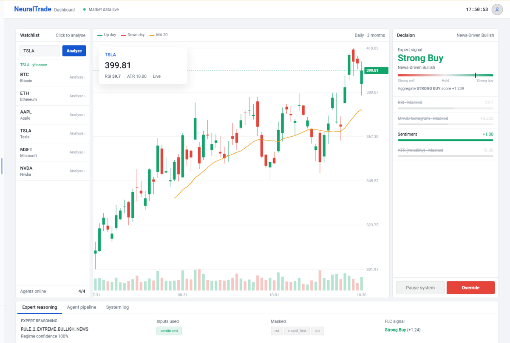
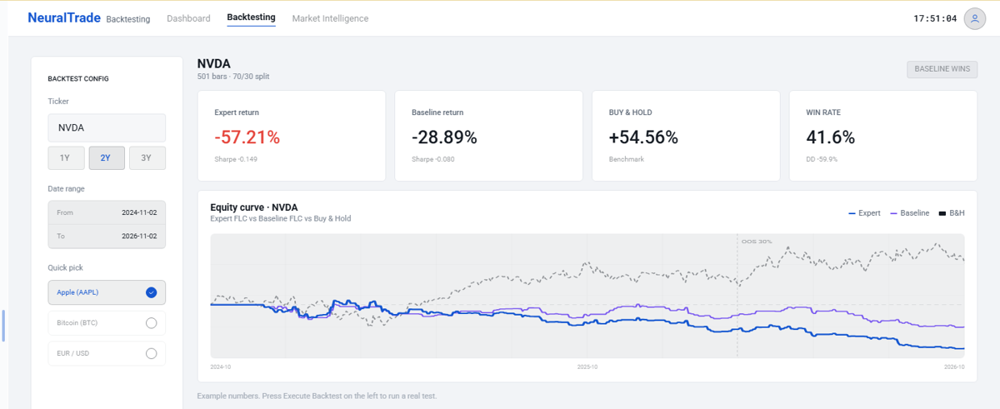
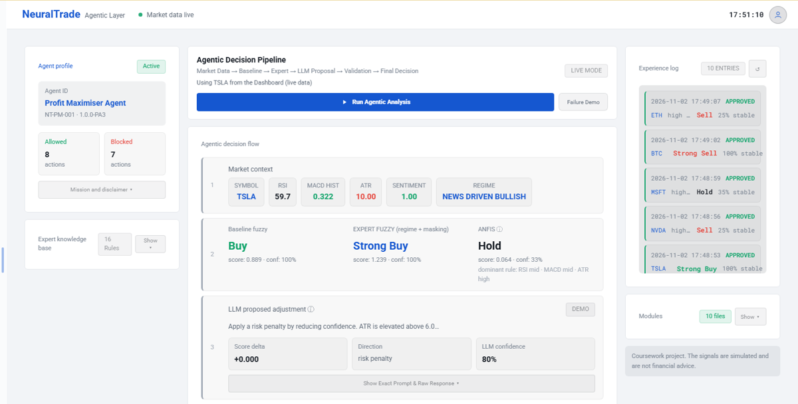

A fuzzy logic helper for Buy, Sell or Hold
NeuralTrade reads a stock or crypto ticker, scores RSI, MACD, ATR and news sentiment with a Mamdani fuzzy engine, and explains how it reached its signal. An expert layer decides which inputs to trust in each kind of market, and an AI suggestion only counts after it passes a rule check.
BUYHOLDSELL

What works in the online demo
The real app is a Python Flask server. This page cannot run Python, so the demo answers from data recorded from the real app. Nothing here uses a paid service.
| Feature | Online demo | Full version (run locally) |
|---|---|---|
| Price charts and indicators | Recorded AAPL, TSLA, NVDA, MSFT, BTC, ETH | Any ticker, live from yfinance (free) |
| Fuzzy engine and expert layer | Recorded results for the tickers above | Worked out live for every request |
| Backtesting | Recorded 6 tickers, 1Y, 2Y and 3Y | Any ticker and period |
| Agentic layer and validation gate | Works with the built in demo AI | Same, or real AI with a DeepSeek API key |
| AI reasoning (LLM) | Demo mode fixed example scenarios | Needs a DeepSeek API key (paid, not included) |
| Market news and brief | Demo mode sample headlines, rule based brief | Live news needs a Marketaux API key (free plan available) |
| Tutorial with typed values | Recorded shows one saved run | Works out your own RSI, MACD, ATR and sentiment |
How a decision is made
- Prices come from yfinance and turn into RSI, MACD histogram and ATR. News gives a sentiment score.
- A Mamdani fuzzy engine with 26 rules scores every input, then centroid defuzzification gives one signal.
- The expert layer spots the market regime, such as calm or news driven, and masks or re-weights inputs.
- The AI proposes a small change to the score. A gate of 16 expert rules approves, changes or rejects it.
- Every run is logged, and backtesting compares the result with a plain fuzzy baseline and buy and hold.
More screens

